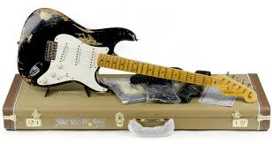
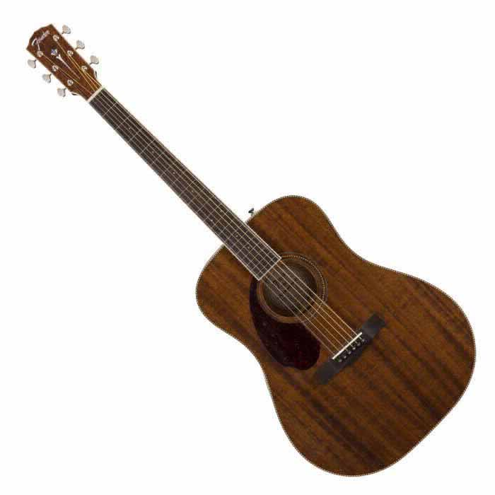
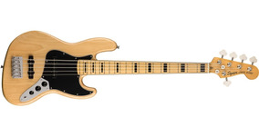

GUITARRAS |
BAJOS |
| HISTORIA FENDER Fender es la marca lider en el mercado en guitarras y bajos a nivel mundial desde antes de la decada de los 80's, han fabricado las guitarras de los músicos más importantes en la historia de la música a partir de los años 60's. A lo largo de los años Fender ha revolucionado el sonido de las guitarras, sin embargo, siguen manteniendo ese diseño clásico en las guitarras. Esta marca cuenta con su propia linea baja de guitarras, que son guitarras de menor calidad y precio que han sido muy bien aceptadas en el mercado ya que son muy útiles para guitarristas principiantes, el nombre de esta linea baja es "SQUIER". Fender tiene la patente de todos sus modelos, es por esto que en otras marcas va a ser muy dificil que encuentres estos modelos. Y es así como Fender ha logrado colocarse como número uno en el mercado. Ha creado los modelos de guitarras que tanto amamos y que tanto nos gusta tocar. |
  g |